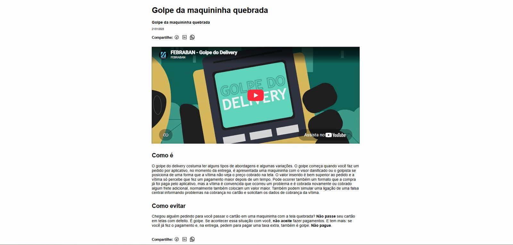
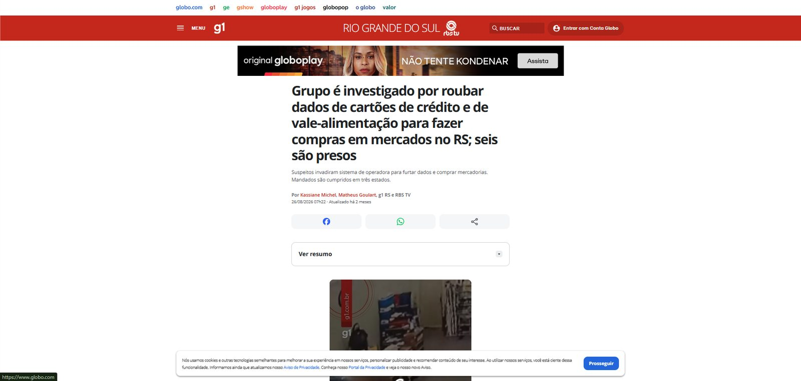
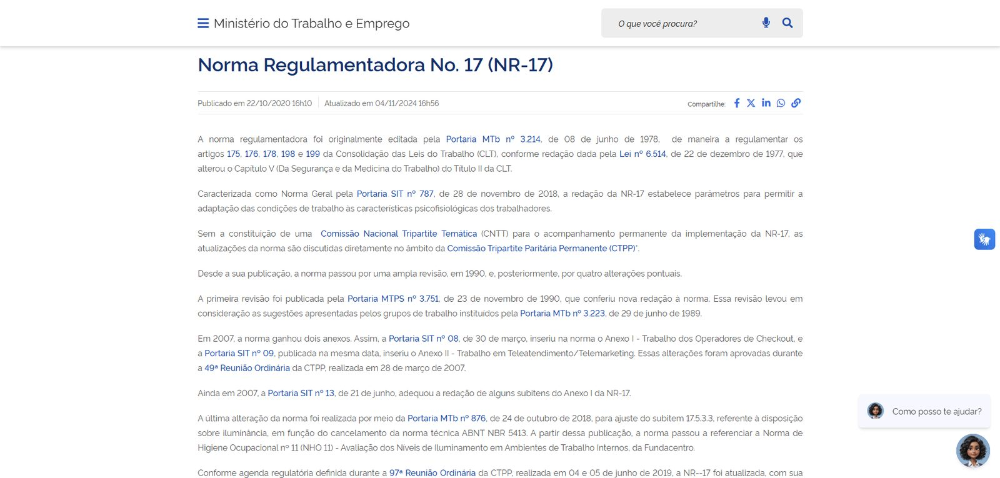

Site educativo sobre o golpe da maquininha clonadora de cartões, baseado em caso real investigado pela Polícia Civil e denunciado pelo Fantástico (G1) em julho de 2025. Aqui você entende como o crime acontece, como foi investigado e como se proteger — incluindo cuidados com computadores compartilhados no SENAI e na indústria.
Notícia real publicada pelo programa Fantástico (G1) em 27 de julho de 2025. O caso mostra como criminosos usam maquininhas adulteradas para clonar cartões físicos durante pagamentos simples, como o de uma corrida de táxi.
Criminosos se passam por taxistas e usam maquininhas adulteradas, com um botão camuflado que simula erro na transação e permite visualizar a senha digitada pela vítima. Enquanto fingem problemas de conexão, o golpista memoriza os dados do cartão e troca o cartão verdadeiro por outro em um momento de distração. Com a senha e o cartão original em mãos, realizam compras de alto valor em minutos.
Entre as vítimas conhecidas estão Nunzia Caruso, aposentada de São Paulo que perdeu R$ 4.900, e o médico Thales Bretas, viúvo do humorista Paulo Gustavo, que perdeu R$ 4.215 no Rio de Janeiro. O Fórum Brasileiro de Segurança Pública estima que milhares de pessoas tenham sido lesadas em todo o país no período de um ano.
Uma passageira atenta, no Rio de Janeiro, desconfiou do comportamento do taxista e acionou a Polícia, o que levou à prisão de Daniel de Souza Alves, suspeito de aplicar o golpe. Thales Bretas reconheceu o suspeito após ver uma reportagem na TV.
Daniel de Souza Alves foi detido enquanto tentava enganar outra vítima e foi indiciado por estelionato. O delegado André Figueiredo explicou o funcionamento do golpe em entrevista. As instituições financeiras acionadas bloqueiam as contas de destino quando a fraude é detectada, mas a recuperação do dinheiro depende da rapidez do registro do boletim de ocorrência e do acionamento do banco pelo cliente.
Reconhecer os sinais do golpe é a primeira defesa. Veja a sequência típica usada pelos criminosos, conforme descrito na reportagem e na investigação policial.
O criminoso se passa por taxista ou entregador, gerando um momento de pagamento presencial em que a vítima está distraída.
O aparelho tem um botão camuflado que simula erro de transação e exibe a senha digitada na tela do próprio golpista.
O golpista finge que “a conexão caiu” ou “débito não passou”, pedindo que o cartão seja inserido novamente.
Num momento de distração, o cartão verdadeiro é substituído por outro parecido. A vítima guarda o falso sem perceber.
Com o cartão e a senha em mãos, comparsas fazem compras de alto valor — em alguns casos, até R$ 17 mil — antes do bloqueio.
Segundo as fontes consultadas, três atitudes teriam reduzido drasticamente o risco: usar aplicativos de transporte que já incluem o pagamento na corrida, embarcar em pontos oficiais com motoristas cadastrados e pagar por aproximação (NFC) ou Pix — evitando entregar o cartão físico. Ficar alerta quando o motorista diz que “a transação não passou” também é essencial.
Orientações práticas baseadas na reportagem do G1, na Cartilha de Segurança do CERT.br e em boas práticas de bancos e especialistas.
O cartão deve ser passado na sua frente. Se o atendente levar o cartão para longe, recuse e exija que a operação aconteça no seu campo de visão.
A tecnologia NFC gera um código único por transação e não exige digitar a senha, o que reduz drasticamente o risco de clonagem da trilha magnética.
Se a maquininha repetidamente “não passar” o pagamento, peça para cancelar a operação, guarde o cartão e use outra forma de pagamento.
Antes de guardar, olhe o nome impresso e os últimos 4 dígitos. Golpistas devolvem um cartão parecido para a vítima só perceber a troca horas depois.
Configure alertas de cada compra no aplicativo do banco. Em caso de movimento estranho, você consegue bloquear o cartão em segundos.
Para compras online, gere um cartão virtual de uso único. Nunca digite os dados do cartão físico em sites desconhecidos.
Em serviços de transporte, prefira aplicativos que já incluem o pagamento na corrida. Em pontos oficiais, os motoristas são previamente cadastrados.
Recomendações para estudantes e trabalhadores que utilizam computadores do SENAI, de laboratórios, de empresas ou de ambientes industriais — nos dois aspectos exigidos pelo projeto: proteção da informação e segurança física/ergonômica.
Marque cada item conforme for concluindo. O “Nível de Segurança” sobe à medida que você completa as três etapas.
5 perguntas sobre o golpe da maquininha e a segurança em computadores compartilhados. Você descobre a resposta correta imediatamente após clicar.
Esta seção registra, passo a passo, como a pesquisa e o desenvolvimento foram feitos: diário de bordo, ferramentas utilizadas e os prints da pesquisa e do desenvolvimento, organizados na ordem em que a atividade aconteceu.
Iniciei o projeto pesquisando uma notícia real em veículos de comunicação confiáveis. Com o fato compreendido, estudei as normas de ergonomia (NR-17) e a cartilha de segurança do CERT.br. Em seguida, estruturei a base do código HTML e a lógica interativa (quiz e checklist), refinando sucessivamente o layout e o texto até atingir um padrão profissional.
A maior dificuldade foi criar um design que não parecesse um “template genérico de IA” e integrar todo o código (HTML, CSS e JS) em um único arquivo, mantendo-o responsivo. A solução foi aplicar abordagens de design editorial (fontes serifadas, paleta marinho e âmbar) e iterar os pedidos de estilo até o resultado ficar humanizado.
Editor de código, navegador com DevTools para testes de responsividade e IAs como assistentes de codificação (pair-programming), sempre revisando e reescrevendo o conteúdo com as próprias palavras.
Aprendi que a segurança cibernética depende frequentemente de engenharia social: criminosos exploram pressa, distração ou confiança da vítima. No desenvolvimento, aprendi a iterar códigos gerados por IA em vez de aceitar o primeiro resultado, refinando o CSS e a identidade visual até atingir o padrão exigido pelo projeto.
Três registros na ordem em que a atividade foi conduzida: da pesquisa de fontes complementares à consulta da NR-17 no site oficial do Ministério do Trabalho.

Pesquisa · Fonte complementarMaterial complementar consultado durante a pesquisa, com data de 21/01/2026 e vídeo da FEBRABAN. Serviu para entender as variações do golpe além do caso principal.

Pesquisa · Notícia basePágina do portal G1 exibindo a manchete e a assinatura dos jornalistas. Confirma a credibilidade do veículo e a data de publicação utilizada no estudo de caso.

Pesquisa · NR-17 (MTE)Página gov.br com a NR-17 (Ergonomia) atualizada, consultada para embasar as recomendações de segurança física e organização do posto de trabalho em computadores compartilhados.
Todas as informações do caso são baseadas na reportagem abaixo. As recomendações de prevenção têm como base a cartilha do CERT.br e a NR-17.
Fantástico (G1) · 27/07/2025
g1.globo.com/fantastico/noticia/2025/07/27/...Centro de Estudos, Resposta e Tratamento de Incidentes de Segurança no Brasil.
cartilha.cert.brNorma Regulamentadora que estabelece parâmetros para postos de trabalho.
gov.br/trabalho-e-emprego — NR-17